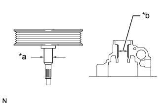
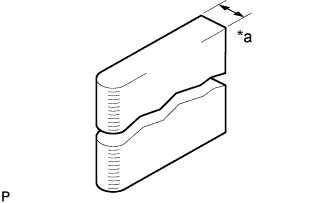
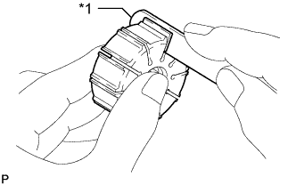

VANE PUMP > INSPECTION |
| 1. INSPECT VANE PUMP SHAFT AND BUSH IN VANE PUMP FRONT HOUSING |
|  |
Using a micrometer, measure the outer diameter of the vane pump shaft.
| *a | Outer Diameter |
| *b | Inner Diameter |
Using a vernier caliper, measure the inner diameter of the vane pump front housing bush.
Calculate the oil clearance.
Oil clearance = Inner diameter of the bush - Outer diameter of the shaft
| 2. INSPECT VANE PUMP ROTOR AND VANE PUMP PLATE |
|  |
Using a micrometer, measure the thickness of the vane pump plates.
| *a | Thickness |
|  |
Using a feeler gauge, measure the clearance between the side face of the vane pump rotor groove and the vane pump plate.
| *1 | Feeler Gauge |
| 3. INSPECT PRESSURE PORT UNION |